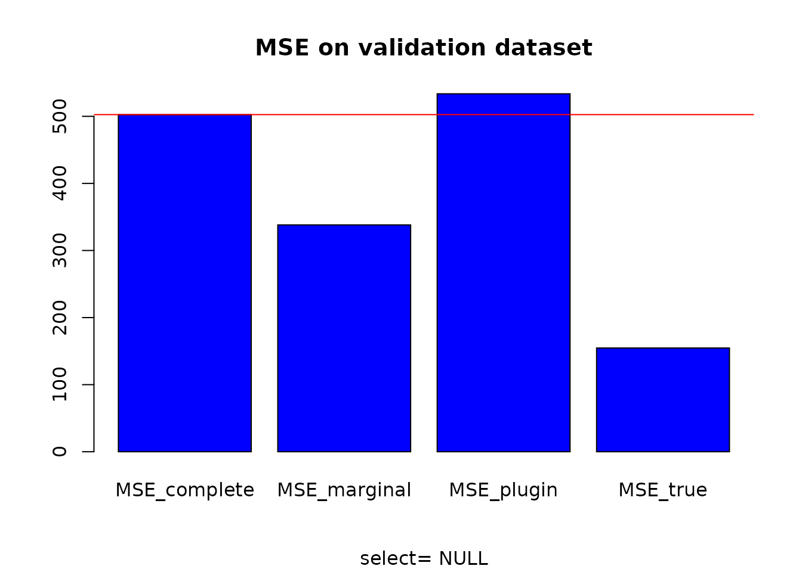

vignettes/CorReg.Rmd
CorReg.RmdThis package was motivated by correlation issues in real datasets, in particular industrial datasets.
The main idea stands in explicit modeling of the correlations between covariates by a structure of sub-regressions (so it can model complex links, not only correlations between two variables), that simply is a system of linear regressions between the covariates. It points out redundant covariates that can be deleted in a pre-selection step to improve matrix conditioning without significant loss of information and with strong explicative potential because this pre-selection is explained by the structure of sub-regressions, itself easy to interpret. An algorithm to find the sub-regressions structure inherent to the dataset is provided, based on a full generative model and using Monte-Carlo Markov Chain (MCMC) method. This pre-treatment does not depend on a response variable and thus can be used in a more general way with any correlated datasets.
In a second part, a plug-in estimator is defined to get back the redundant covariates sequentially. Then all the covariates are used but the sequential approach acts as a protection against correlations.
This package also contains some functions to make statistics easier (see BoxPlot and recursive_tree or matplot_zone).
In this vignette we explain the main method in CorReg that leads to the correg function. This function allows to make linear regression using sub-regressions structure and/or many variable selection methods (including lasso, ridge, clere, stepwise,…)
We first generate (for this tutorial) a dataset with strong correlations between the covariates. The mixture_generator function gives such a dataset and also a validation sample built with the same parameters. Both contains a response variable generated on some covariates (not all) by linear regression. So we have sub-regressions that make some variables redundent when we know the other variables. Such correlations make the variance of the regression estimators explode. Moreover, dimension is unnecessarily high and interpretation of regression coefficients is dangerous.
## The first rule of CorReg is: You talk about CorReg# dataset generation base <- mixture_generator(n = 15, p = 10, ratio = 0.4, tp1 = 1, tp2 = 1, tp3 = 1, positive = 0.5, R2Y = 0.8, R2 = 0.9, scale = TRUE, max_compl = 3, lambda = 1) X_appr <- base$X_appr # learning sample Y_appr <- base$Y_appr # response variable for the learning sample Y_test <- base$Y_test # response variable for the validation sample X_test <- base$X_test # validation sample TrueZ <- base$Z # True generative structure (binary adjacency matrix)
We also get an adjacency matrix Z that describes the Directed Acyclic Graph of the links between the covariates. See https://en.wikipedia.org/wiki/Adjacency_matrix for more informations on adjacency matrices.
TrueZ
## [,1] [,2] [,3] [,4] [,5] [,6] [,7] [,8] [,9] [,10]
## [1,] 0 0 0 1 0 0 1 0 0 0
## [2,] 0 0 0 1 0 0 0 1 0 0
## [3,] 0 0 0 1 1 0 1 0 0 0
## [4,] 0 0 0 0 0 0 0 0 0 0
## [5,] 0 0 0 0 0 0 0 0 0 0
## [6,] 0 0 0 0 0 0 0 0 0 0
## [7,] 0 0 0 0 0 0 0 0 0 0
## [8,] 0 0 0 0 0 0 0 0 0 0
## [9,] 0 0 0 0 1 0 1 1 0 0
## [10,] 0 0 0 0 1 0 0 1 0 0
# TrueZ[i,j]==1 means that X[,j] linearly depends on X[,i]
We will try to find this structure (in real life we don’t know the true structure).
To find the correlation structure we need a global density model that will serve as a null hypothesis. Each variable can be independent (following a certain density we have to estimate) or can be lineary dependent on other covariates. The density_estimation function will provide this null hypothesis for each variable. We use Gaussian Mixture to fit a large scope of density in real life.
# density estimation for the MCMC (with Gaussian Mixtures) density <- density_estimation(X = X_appr, nbclustmax = 10, detailed = TRUE, package = "Rmixmod") Bic_null_vect <- density$BIC_vect # vector of the BIC found (1 value per covariate)
Each null hypothesis is associated to a BIC criterion. Complexity is the one of each mixture model.
We use a specific MCMC algorithm (http://www.theses.fr/2015LIL10060 and http://www.theses.fr/2015LIL10060/document/ or https://hal.archives-ouvertes.fr/hal-01099133/) to find the Adjacency matrix that describes the correlation structure. We use the Bayesian Information Criterion (BIC) to compare null hypothesis and complex correlations structures with many sub-regressions between covariates.
# MCMC to find the structure res <- structureFinder(X = X_appr, verbose = 0, reject = 0, Maxiter = 1500, nbini = 30, candidates = -1, Bic_null_vect = Bic_null_vect, star = TRUE, p1max = 15, clean = TRUE) hatZ <- res$Z_opt # found structure (adjacency matrix) hatBic <- res$bic_opt # associated BIC
As we work with a dataset we have generated, we know the true structure so we can compare the result with the true model. In terms of BIC:
# BIC comparison between true and found structure bicopt_vect <- BicZ(X = X_appr, Z = hatZ, Bic_null_vect = Bic_null_vect) bicopt_True <- BicZ(X = X_appr, Z = TrueZ, Bic_null_vect = Bic_null_vect) sum(bicopt_vect)
## [1] 232.5486sum(bicopt_True)
## [1] 233.126And in terms of structure:
# Structure comparison compZ <- compare_struct(trueZ = TrueZ, Zalgo = hatZ) # qualitative comparison compZ
## $ratio_true1
## [1] 1
##
## $ratio_true0
## [1] 0.9659091
##
## $true1
## [1] 12
##
## $false1
## [1] 3
##
## $false0
## [1] 0
##
## $deltadr
## [1] 0
##
## $true_left
## [1] 4
##
## $false_left
## [1] 0Then we have a look on the sub-regressions themselves. Each item of the list represents a subregression.
First element is the R-square.Second element is the variable that is regressed by others (if no names provided it gives the position of the variable in the dataset).
Then comes the list of the explicative variables in the subgression and the associated coefficients (in the first column). The readZ function allows to list them by relevance.
# interpretation of found and true structure ordered by increasing R2 readZ(Z = hatZ, crit = "R2", X = X_appr, output = "all", order = 1) # <NA>line : name of subregressed covariate
## [[1]]
## coefs var
## 1 0.763627779582872 R2
## 2 <NA> 7
## 3 -0.95096668874617 intercept
## 4 -0.215351971542605 1
## 5 -0.275957639038572 3
## 6 0.213997532231663 9
##
## [[2]]
## coefs var
## 1 0.875981735637462 R2
## 2 <NA> 8
## 3 -0.794300165850345 intercept
## 4 -0.250169963376396 2
## 5 0.331338716207297 9
## 6 -0.347877530911985 10
##
## [[3]]
## coefs var
## 1 0.891424203727649 R2
## 2 <NA> 4
## 3 0.81599150070669 intercept
## 4 0.2895836937414 1
## 5 -0.231311915539413 2
## 6 -0.19616025344866 3
## 7 0.0295495642271822 6
## 8 0.055446454310391 9
## 9 0.0487765856349273 10
##
## [[4]]
## coefs var
## 1 0.912689176443977 R2
## 2 <NA> 5
## 3 -0.952878559141843 intercept
## 4 0.117374260074963 3
## 5 -0.330429556712803 9
## 6 -0.301499754625944 10readZ(Z = TrueZ, crit = "R2", X = X_appr, output = "all", order = 1) # <NA>line : name of subregressed covariate
## [[1]]
## coefs var
## 1 0.763627779582872 R2
## 2 <NA> 7
## 3 -0.95096668874617 intercept
## 4 -0.215351971542605 1
## 5 -0.275957639038572 3
## 6 0.213997532231663 9
##
## [[2]]
## coefs var
## 1 0.852984642098211 R2
## 2 <NA> 4
## 3 0.778212622801879 intercept
## 4 0.280860510930914 1
## 5 -0.25239181283297 2
## 6 -0.175167200460096 3
##
## [[3]]
## coefs var
## 1 0.875981735637462 R2
## 2 <NA> 8
## 3 -0.794300165850345 intercept
## 4 -0.250169963376396 2
## 5 0.331338716207297 9
## 6 -0.347877530911985 10
##
## [[4]]
## coefs var
## 1 0.912689176443977 R2
## 2 <NA> 5
## 3 -0.952878559141843 intercept
## 4 0.117374260074963 3
## 5 -0.330429556712803 9
## 6 -0.301499754625944 10We can finally use the correg function to make linear regression using the sub-regression structure learnt above. We get three models :
# Regression coefficients estimation select = "NULL" # without variable selection (otherwise, choose "lar" for example to use lasso selection) resY <- correg(X = X_appr, Y = Y_appr, Z = hatZ, compl = TRUE, expl = TRUE, pred = TRUE, select = select, K = 10)
# MSE computation MSE_complete <- MSE_loc(Y = Y_test, X = X_test, A = resY$compl$A) # classical model on X MSE_marginal <- MSE_loc(Y=Y_test, X = X_test, A = resY$expl$A) # reduced model without correlations MSE_plugin <- MSE_loc(Y = Y_test, X = X_test, A = resY$pred$A) # plug-in model MSE_true <- MSE_loc(Y = Y_test, X = X_test, A = base$A) # True model
Then we can compare the MSE obtained for each model.
# MSE comparison MSE <- data.frame(MSE_complete, MSE_marginal, MSE_plugin, MSE_true) MSE # estimated structure
## MSE_complete MSE_marginal MSE_plugin MSE_true
## 1 1568.283 1209.953 1197.164 285.2366barplot(as.matrix(MSE), main = "MSE on validation dataset", sub = paste("select=", select), col = "blue") abline(h = MSE_complete, col = "red")
